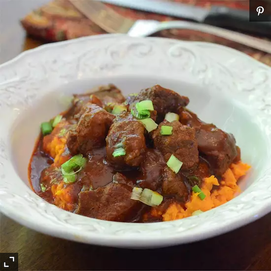

Red Chile Beef Stew

Description
In this recipe, beef stew meat is braised in a rich, mildly spicy red chile sauce until fork tender and served over mashed sweet potatoes.
Ingredients
- 2 large sweet potatoes
- 1 teaspoon smoked paprika
- 1 teaspoon oregano
- Half a teaspoon ground cumin
- Half a teaspoon salt, or to taste
- Half a teaspoon fresh ground black pepper
- 2 tablespoons vegetable oil, or as needed
- 2.5 pounds beef stew meat, cubed
- Half a cup chopped onion
- 1 cup beef broth
- 1 (12 ounce) bottle Mexican guajillo red chile cooking sauce (such as Herdez®)
- 2 tablespoons tomato paste
- 2 green onions, chopped (Optional)
Mashed Sweet Potatoes:
- One third cup light sour cream
- 1 tablespoon butter
- salt to taste
Directions
- Place potatoes into a large pot and cover with water; bring to a boil.
Reduce heat to medium-low and simmer at a low boil until tender all the way through when pierced with a sharp knife, 40 to 45 minutes.
- Meanwhile, combine paprika, oregano, cumin, salt, and black pepper in a small bowl and set seasoning mix aside.
- Coat the bottom of a large saute pan with oil and place over medium-high heat. Add beef to the hot oil and sprinkle with seasoning mix.
Cook, stirring as needed, until browned on all sides, about 10 minutes.
Cook in batches if needed, to avoid overcrowding. Transfer beef to a plate and set aside.
- Add more oil to the pan if necessary and add onion. Cook and stir until softened, 3 to 5 minutes.
Add broth, chile sauce, and tomato paste to the pan. Cook and stir until sauce is well combined and warmed through, 3 to 5 minutes more.
Return beef to the pan, bring sauce to a low boil, then reduce heat to low. Cover and simmer stew for 1 hour.
- Drain sweet potatoes and allow to cool until safe to handle. Remove skins using a paper towel to pull them off and discard.
Place sweet potatoes in a large mixing bowl and add sour cream, butter, and salt. Beat using a hand mixer until smooth and creamy.
- Spoon individual portions of sweet potatoes onto serving plates and top with heaping spoonfuls of stew. Garnish with chopped green onions.
Back To Index